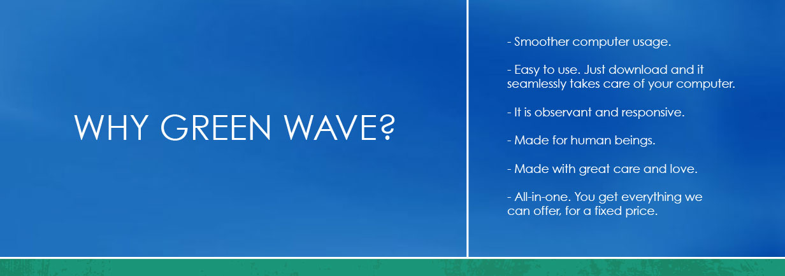

FAQ
Approximately how much energy is being saved?
For laptop computers you can save up to about 10W and about 2-3 times more for desktop computers. For a continuously-running laptop that comes to about 10 euros per year. Correspondingly, for desktop computers you'll save up to 20-30 euros per year. It's worth considering that energy is currently greatly underpriced and prices are expected to continue rising.
Is there any alternative software that does similar things?
Yes, you can buy an Apple Mac and have OS X Mavericks installed on it. It is possible that OS X will offer a comparable experience. Apple has been experimenting with these ideas lately and OS X Mavericks is definitely a step in the right direction. Note that at this time you will still need to upgrade your Mac software, as not all programs have been (or will be) upgraded to take
advantage of OS X Mavericks' capabilities.
Are there any hardware changes that I still might need to do in order to speed up my computer?
Yes, if possible, adding more RAM (random access memory) helps a lot in some cases. In this regard Green Wave cannot replace having more physical resources. Even so, it does its best to manage priorities for existing memory resources. Green Wave will notify you when it thinks that having more RAM might help.
Isn't it enough to update my computer using Windows Update?
Usually Windows Update does not offer the kinds of updates that would speed up your computer. The majority of updates address security and stability issues.
Does Green Wave change the settings of my computer?
No, Green Wave works by only managing the system in real time, it does not change or store anything in system settings except inserting itself into startup programs list. When you quit the Green Wave program, the system is in the state it was before starting the program. This is one aspect where Green Wave di�ffers from the other Windows optimisation softwares — instead of changing system settings, it interacts with it in real time. You can imagine the difference metaphorically speaking as difference between a good mechanic (programs that change system settings) and a good robot-driver (Green Wave). A mechanic can do only so much and the rest still depends on the driving style of the driver.
Does Green Wave collect and send any information to the internet?
No, Green Wave does not send any information to the internet. We are intending to collect some anonymous performance statistics in such a manner that we log the information to text file, and when you are willing to help us you can send it to us by email. The file will be human-readable, this way you can always review what is inside this file before sending it.
What kinds of resources does Green Wave manage? (technical)
Green Wave virtualises some of Windows API. It also manages processes' CPU usage, Processes' and Threads' CPU, IO, and Page priorities, Priority Boost �flag, CPU Affi�nity, WorkingSet limits, Timer intervals and resolutions, enforces Timer, Sleep and synchronisation API timeout coalescing, manages various synchronisation and wait API calls, window messages, and clipboard ownership, speeds up window switching by boosting new foreground window proactively and enabling cache of the window contents where possible.
How does this software differ from other similar products? (technical)
We are not aware of other similar products. There is number of complementary programs that all work on different level — so one can use Green Wave and the other products in parallel. The other products we know of all work on hardware level, they optimise the energy use of hardware. Green Wave works on software level and optimises the energy use of software. It is important to note that in any case in order for the hardware optimisers to do their job they depend on the software. If the software does not release the resources then the hardware optimisers do not have a chance to switch the hardware into using more economic gears. They usually just turn on the economic modes in hardware, but newer Windows versions do that also automatically better than before. In any case, hardware optimisers do not participate in the work of other programs. Opposed to that, Green Wave actively participates and controls many software events and processes in the operating system. You can imagine the difference metaphorically speaking as di�fference between a good automatic transmission (programs that manage hardware resources) and a good robot-driver (Green Wave). An automatic transmission can do only so much and the rest still depends on the driving style of the driver.
How does this software differ from resource management of WinRT available in Windows 8? (technical)
WinRT is meant mainly for use in mobile devices and requires programs to be specially (re)written in order to support it. All existing software is incompatible with WinRT. As a comparison, Green Wave is able to work with all programs. WinRT cannot manage resources for programs that need to be constantly running in background. Also one can assume that the bigger a program is the
less likely that it will ever support resource management of WinRT. Finally, though WinRT does its specifi�c job very well, it manages just a subset of the resources that Green Wave does. So again it is a complementary system.
© 2014 Green Wave. The computer humanised. Be power smart. Ride on.
Green Wave is a project by Simplify. Inspired by stars, Android operating system, WinRT and Mac OSX Mavericks. No Windows developers were harmed during its implementation.